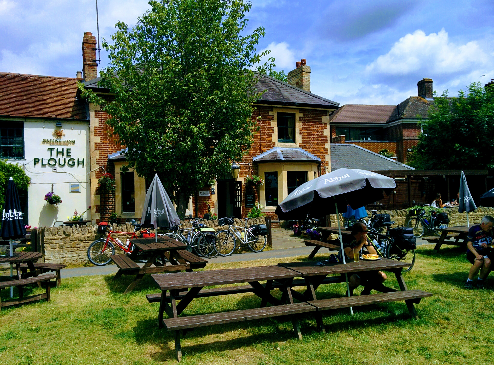

The Plough — Port Meadow
A meadow-side pause beloved by walkers and rowers. Expect a playground for families, seasonal menus that occasionally overachieve, and sunsets that feel miles away from city bustle.
The Green, Upper Wolvercote, OX2 8BD — theploughoxford.co.uk